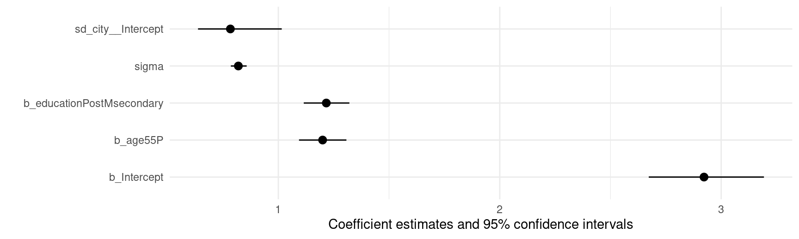
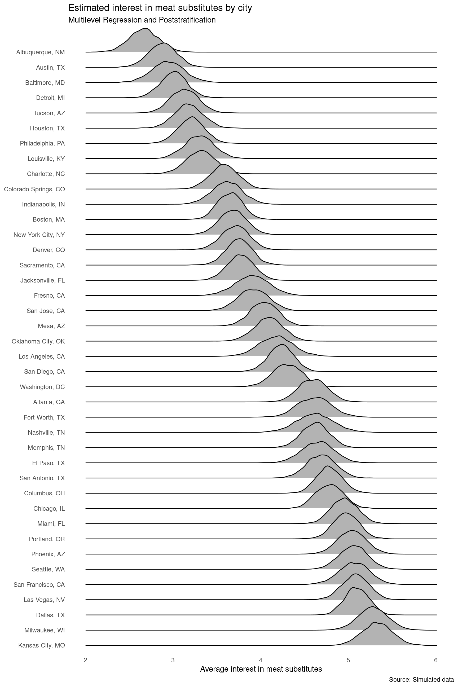

Data analysts often want to learn about a population using samples that are not representative of that population. Consider a few examples:
Market research: A supermarket chain wants to assess consumer preferences in each of the markets where it operates, but it would be too expensive to collect distinct representative samples for many cities.
Political polling: A newspaper conducts a nationally representative survey in the lead up to a Presidential election, and wishes to compute state-by-state estimates of voting intentions.
Online surveys: A researcher conducts a poll online, but the respondents are younger and more highly educated than the general population.
This notebook introduces Multilevel Regression with Poststratification (MrP), a popular strategy which can be used to limit the distortions in unrepresentative data, or to estimate subgroup characteristics on the basis of data gathered at a different level of aggregation. MrP can be deployed in a wide range of contexts (see this paper and this blog post by the always excellent Monica Alexander).
As we will see below, MrP is super easy to implement using the marginaleffects package for R. marginaleffects also offers tremendous benefits to analysts, including a consistent user interface to over 100 classes of statistical models, as well as many post-estimation and hypothesis testing tools. To illustrate these benefits, we will consider a hypothetical example with simulated data.1
MrP, not Mister T.
MrP for surveys and market research
Imagine that a national supermarket chain plans to introduce a line of meat substitutes in some of its stores. To guide marketing and distribution efforts, the company would like to know the share of the population in each city that is interested in tasting meat substitutes.
The company conducts a telephone survey of 1000 randomly selected adults from 40 large American cities. For each survey respondent, we record the city of residence, age, level of education, and whether they are interested in tasting meat substitutes. The variable we focus on is “interest in meat substitutes,” measured on a scale of 1 to 7 where 7 means “very interested” and 1 means “not at all interested”. Our ultimate goal is to estimate the average of this 7 point scale for each city.
The (simulated) data that we will use is stored in a R data frame called survey. We can use the nrow() function to confirm the sample size, and the datasummary_df() function from the modelsummary package to display the first few rows of data:
This dataset includes 1000 observations: one per survey respondent. Unfortunately, it is not straightforward to compute precise city-by-city estimates, because although the number of respondents is large overall, the number of respondents within each of the 40 cities is relatively small. Moreover, the company’s sampling strategy does not guarantee that subsamples are representative of each city’s population. MrP can help us circumvent these problems in two steps:
Multilevel regression (Mr): Estimate a multilevel regression at the individual level, with random intercepts for cities.
Poststratification (P): Adjust the predictions of the model based on the demographic characteristics of each city.
In the rest of this notebook, we show that the marginaleffects package makes it very easy to apply these steps.
“Mr” for “Multilevel regression”
The first step of MrP is to use individual-level data to estimate a model that predicts the value of the variable of interest. One of the great benefits of using marginaleffects for MrP, is that this package is agnostic to the type of model used to make predictions. Analysts can use almost any model they like, and the workflow described below would remain the same.
One popular choice for MrP is to estimate a multilevel regression model with random intercepts for each of the geographic regions of interest. To do so, analysts could use many different R packages, including lme4, glmmTMB, or brms. In this notebook, we use the brms::brm() function to estimate a bayesian multilevel model, with the age and education variables as fixed components, and random intercepts at the city level:
mod <-brm(meat_substitute ~ age + education + (1| city), data = survey)
We can visualize the model estimates using the modelplot() function from the modelsummary package:
modelplot(mod)

We are now ready for the second MrP step: poststratification.
“P” for “Poststratification”
In the second MrP step, we use data from the US Census (or a similar source) to create a “poststratification table.” This table includes one row for each combination of the predictor values in our model. In our model, the age variable has 2 categories (“18-54” and “54+”); the education variables has 2 categories (“High school or less” and “Post-secondary”); and the city variable has 40 unique entries. Therefore, the poststratification table must have \(2 \times 2 \times 40 = 160\) entries.
Crucially, the poststratification dataset must also include a column with the population share of each combination of predictor values. Consider the table used by our hypothetical supermarket chain. This table includes 160 rows:
nrow(stratification)#> [1] 160
And here are the entries for the city of Tucson, AZ:
tucson <-subset(stratification, city =="Tucson, AZ")datasummary_df(tucson)
city
education
age
population_share
Tucson, AZ
High school or less
18-54
0.16
Tucson, AZ
Post-secondary
18-54
0.38
Tucson, AZ
High school or less
55+
0.20
Tucson, AZ
Post-secondary
55+
0.25
According to these (simulated) data, the share of Tucson residents who are between 18 and 54 year old and have a High School degree or less is about 16%.
We can use the predictions() function from the marginaleffects package to predict the value of the meat_substitute variable for each of the four categories of residents in Tucson:
The MrP estimate for this city is simply the weighted average of predicted values, where weights are the population shares of each category of residents. In this context, we have:
Instead of computing estimates by hand for each city, we can use the by and wts arguments of the predictions() function to do everything everywhere all at once:
p <-predictions( # Compute predictions,model = mod, # using the multilevel regression model `mod`, newdata = stratification, # for each row of the `stratification` table.by ="city", # Then, take the weighted average of predictions by city,wts ="population_share") # using demographic weights.p#> #> city Estimate 2.5 % 97.5 %#> Washington, DC 4.31 3.99 4.64#> Tucson, AZ 3.13 2.81 3.44#> Seattle, WA 5.06 4.73 5.39#> San Jose, CA 3.91 3.59 4.25#> San Francisco, CA 5.07 4.72 5.40#> --- 30 rows omitted. See ?print.marginaleffects --- #> Boston, MA 3.65 3.37 3.93#> Baltimore, MD 2.93 2.56 3.31#> Austin, TX 2.88 2.56 3.19#> Atlanta, GA 4.59 4.27 4.94#> Albuquerque, NM 2.67 2.35 2.99#> Columns: city, estimate, conf.low, conf.high #> Type: response
Since we estimated a bayesian model in the “Mr” step, we can now use the posterior_draws() function to extract draws from the posterior distribution of the MrP estimates. This allows us to compute credible intervals for each city, and draw many fancy plots like this one:
p |># extract draws from the posterior distributionposterior_draws() |># sort cities by interest in meat substitutesarrange(estimate) |>mutate(city =factor(city, levels =rev(unique(city)))) |># plot the resultsggplot(aes(x = draw, y = city)) +geom_density_ridges() +theme_minimal() +theme(panel.grid =element_blank()) +labs(x ="Average interest in meat substitutes",y =NULL,title ="Estimated interest in meat substitutes by city",subtitle ="Multilevel Regression and Poststratification",caption ="Source: Simulated data")

Data simulation
All the data used on this page were simulated using this code: